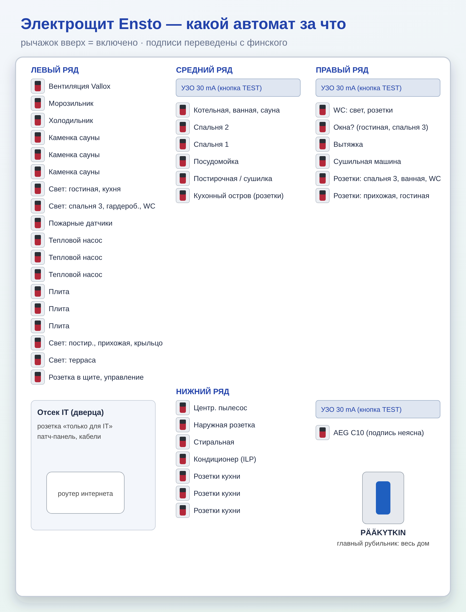

1. Открыть щит в котельной, найти автомат с рычажком ВНИЗ. 2. Выключить/выдернуть прибор, из-за которого выбило. 3. Поднять рычажок вверх. 4. Если сразу выбивает снова — не держать силой, звать электрика (sähköasentaja). • Если выбило широкое УЗО 30 mA — отключилась целая группа: выдернуть подозрительные приборы, поднять УЗО.
• Нажать кнопку TEST на УЗО — рычажок должен упасть (OFF). Поднять обратно. • Если при TEST не выключается — звать электрика.
• PÄÄKYTKIN (синяя ручка внизу справа) — обесточивает весь дом. Для ремонта электрики, при пожаре/затоплении.
Вентиляция Vallox (IV kone) · Морозильник · Холодильник · Каменка сауны ×3 · Свет: гостиная, кухня · Свет: спальня 3, гардеробная, WC · Пожарные датчики · Тепловой насос ×3 (M.L.P.) · Плита ×3 · Свет: постирочная, прихожая, крыльцо · Свет на террасе · Розетка в щите / управление
УЗО 30 mA, затем: Свет и розетки котельной, ванной, сауны · Спальня 2 · Спальня 1 · Посудомойка · Розетка постирочной / сушилка · Розетки кухонного острова
УЗО 30 mA, затем: WC (свет, розетки) · «Ikkuna…» (гостиная, спальня 3) — подпись плохо читается · Вытяжка · Сушильная машина · Розетки: спальня 3, ванная, WC · Розетки: прихожая, гостиная
Центральный пылесос · Наружная розетка · Стиральная машина · Кондиционер / воздушный тепловой насос (I.L.P.) · Розетки кухни ×3 · УЗО 30 mA · отдельно AEG C10 (подпись неразборчива)
• За дверцей слева внизу: роутер/оптический терминал интернета и патч-панель. • Интернет пропал — выдернуть питание роутера на 30 секунд и включить. • Розетка с жёлтой наклейкой — только для сетевого оборудования (макс. 10 А).
OH — гостиная · MH — спальня · VH — гардеробная · KHH — постирочная · ET — прихожая · PH — ванная · TK — техпомещение/котельная · P.R. — розетки · valaistus — свет · kiuas — каменка · liesi — плита · pakastin — морозильник · jääkaappi — холодильник